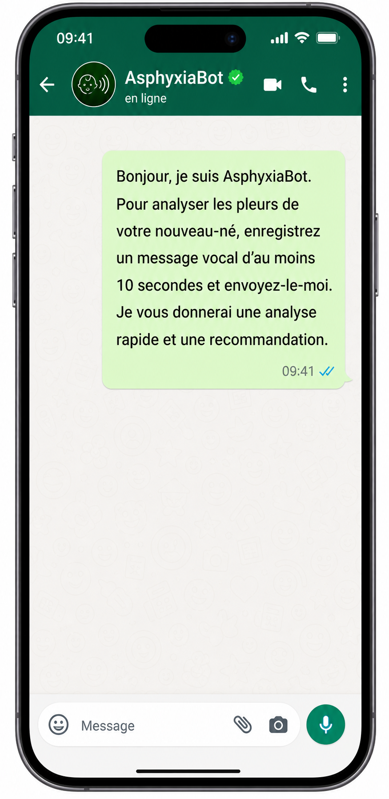
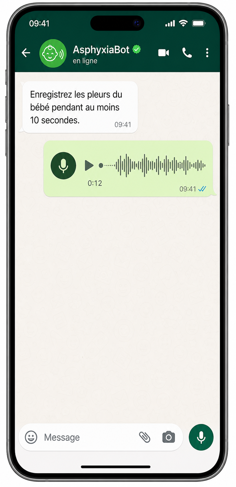
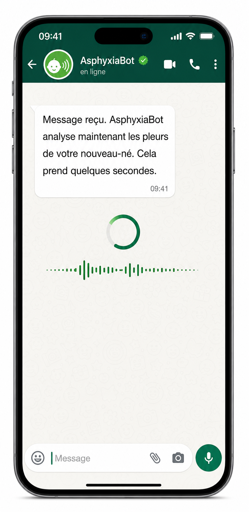
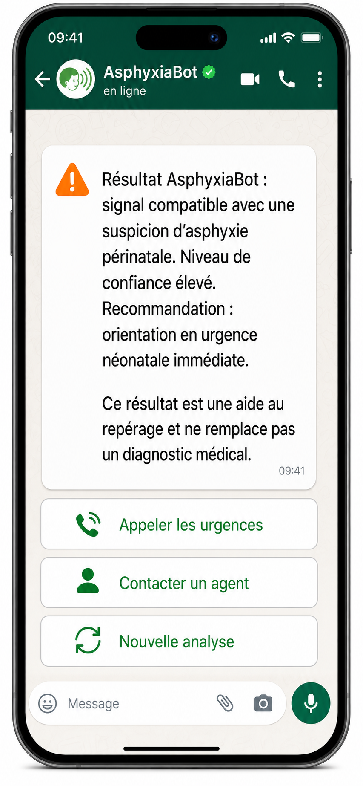
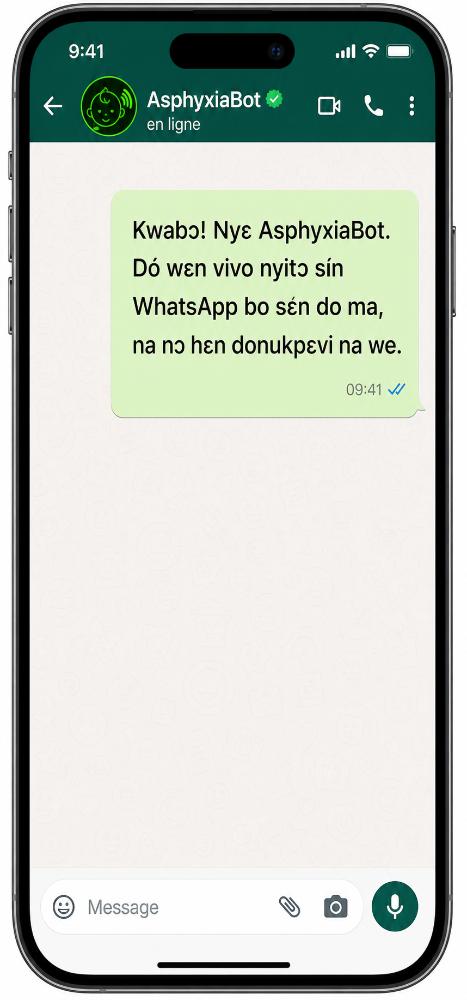
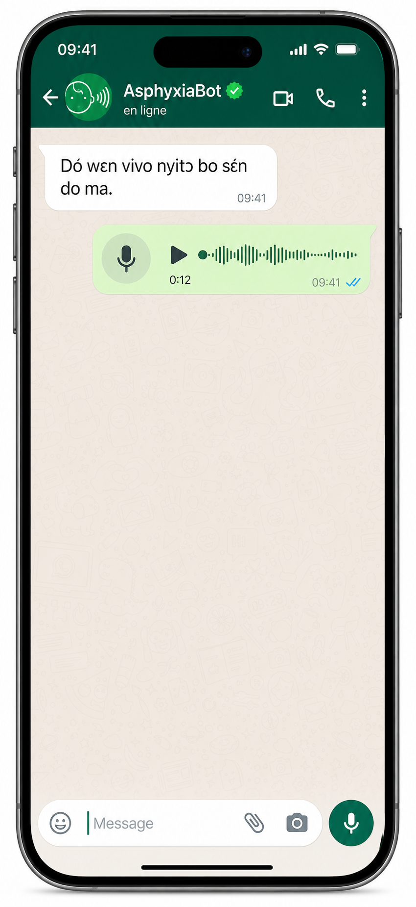
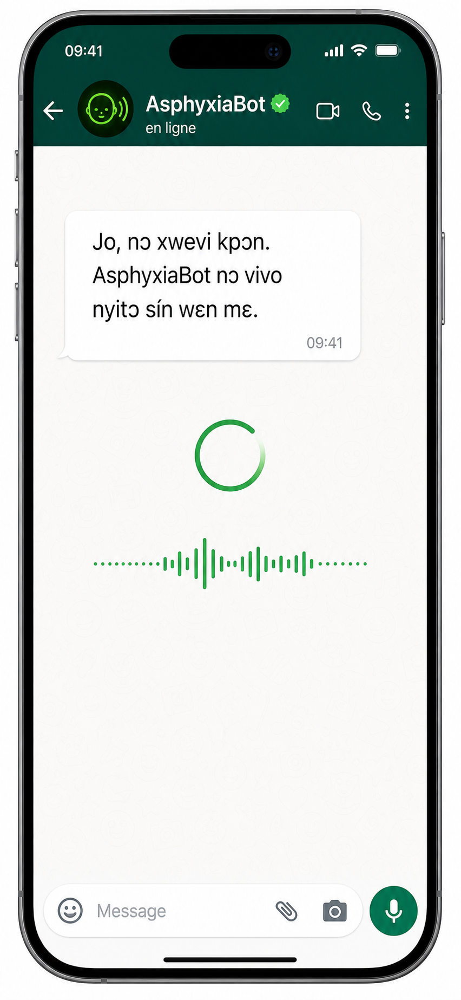
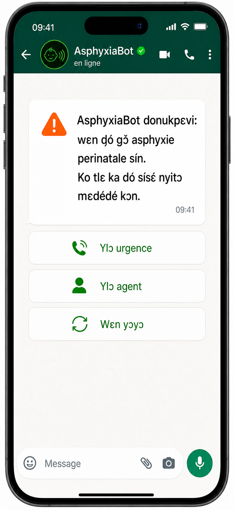

AsphyxiaBot analyse les pleurs d'un nouveau-né via un simple message vocal WhatsApp pour aider au repérage précoce d'une suspicion d'asphyxie périnatale — dans les zones reculées du Bénin, là où l'accès rapide à un avis spécialisé peut être retardé.
01 — Contexte
Dans plusieurs régions reculées du Bénin, l'accès rapide à des soins néonatals spécialisés reste limité par l'éloignement des structures de santé, le manque de personnel qualifié, les difficultés de transport et les retards dans l'orientation des cas urgents. L'asphyxie périnatale fait partie des urgences les plus critiques : elle peut engager très rapidement le pronostic vital du bébé si elle n'est pas repérée à temps. Le déploiement d'AsphyxiaBot s'inscrit dans la Stratégie Nationale d'Intelligence Artificielle et des Mégadonnées 2023–2027 du Bénin, qui identifie la santé comme un secteur prioritaire d'application de l'IA.
02 — Objectif
AsphyxiaBot vise à fournir un outil de première ligne adapté aux centres de santé périphériques, aux agents communautaires et aux zones rurales. L'objectif est de rendre une expertise spécialisée plus accessible, plus rapide et plus directement exploitable sur le terrain.
03 — Solution technique
La solution repose sur l'analyse acoustique des pleurs du nouveau-né, en s'appuyant sur des caractéristiques validées dans la littérature scientifique : fréquence fondamentale, énergie, instabilité, pauses, structure temporelle et spectrale. Le canal WhatsApp, déjà largement adopté, permet un déploiement immédiat sans infrastructure lourde.








04 — Réalisation
05 — Chiffrage indicatif
Le chiffrage est présenté sous forme de prototype pilote, avec une logique de coût progressif adaptée à un déploiement national graduel. Conversion indicative à 1 € ≈ 655 FCFA.
06 — Pour aller plus loin
Cette page peut être complétée par un pitch oral synthétique et une foire aux questions conçue pour anticiper les objections institutionnelles les plus courantes.
Bonjour, et merci de me recevoir.
Je voudrais vous présenter une proposition de solution numérique pour la santé néonatale qui s'inscrit directement dans la Stratégie Nationale d'Intelligence Artificielle et des Mégadonnées 2023–2027 du Bénin, laquelle identifie explicitement la santé comme l'un des secteurs prioritaires d'application de l'IA.
Le problème que nous cherchons à résoudre est précis. Dans les zones rurales et périphériques du Bénin, lorsqu'un nouveau-né présente des signes d'asphyxie périnatale à la naissance, le temps qui s'écoule avant qu'un professionnel de santé prenne la décision d'orienter vers une prise en charge spécialisée peut être fatal. L'éloignement des structures, le manque de personnel qualifié sur place, les difficultés de transport et l'absence d'outils de repérage rapide créent une fenêtre critique où une aide à la décision simple et accessible pourrait faire une différence réelle.
L'idée d'AsphyxiaBot est la suivante : permettre à un agent de santé communautaire, une sage-femme ou même une famille accompagnée d'envoyer un enregistrement vocal des pleurs du bébé via WhatsApp, et de recevoir en retour une analyse rapide indiquant si ce signal acoustique est compatible avec une suspicion d'asphyxie périnatale, avec un niveau de confiance et une recommandation d'orientation claire — surveillance renforcée, consultation rapide, ou urgence néonatale immédiate.
La solution repose sur l'analyse acoustique des pleurs du nouveau-né, un domaine de recherche actif qui a montré que les pleurs d'un bébé souffrant d'asphyxie présentent des caractéristiques acoustiques spécifiques et détectables : fréquence fondamentale, structure temporelle, énergie, instabilité. Ces paramètres, validés dans la littérature scientifique internationale, peuvent être extraits automatiquement et utilisés pour entraîner un modèle de classification.
Ce que nous proposons n'est pas un diagnostic médical. C'est un outil d'aide au repérage, conçu pour fonctionner comme une première ligne d'alerte dans des contextes où l'expertise spécialisée n'est pas immédiatement disponible. La décision médicale reste entièrement entre les mains du professionnel de santé. AsphyxiaBot réduit le délai entre le signal et la décision, pas la responsabilité du soignant.
Sur le plan technique, l'approche est volontairement simple et robuste. Le bot WhatsApp reçoit la note vocale, un backend extrait le signal audio et le prétraite, puis un modèle d'intelligence artificielle spécialisé analyse les paramètres acoustiques et renvoie le résultat directement dans la conversation WhatsApp. Ce canal est déjà maîtrisé par les professionnels et les populations, ce qui élimine la barrière d'adoption et permet un déploiement rapide sans infrastructure lourde.
Le projet est conçu pour un déploiement progressif. La première phase est un pilote fonctionnel, avec un bot développé, un modèle intégré ou adapté à partir de travaux existants, et des tests terrain avec des structures de santé choisies dans quelques zones rurales. C'est cette phase qui permettra de collecter des données locales, de valider le modèle sur les spécificités béninoises avec l'appui de pédiatres et néonatologues locaux, et de mesurer l'adoption réelle sur le terrain. L'enveloppe estimée pour ce pilote est de l'ordre de 13 740 à 32 040 euros, selon que le modèle soit développé localement ou adapté depuis des travaux existants.
La deuxième phase est une extension progressive à d'autres zones sanitaires, avec un enrichissement du modèle grâce aux nouvelles données locales et une formation des agents de santé à l'usage du bot. La troisième phase est un déploiement national, en lien avec les programmes nationaux de santé maternelle et néonatale, avec une connexion aux systèmes d'information sanitaire existants et un suivi d'impact continu.
L'intérêt stratégique pour l'État du Bénin est multiple. D'abord, ce projet contribue directement à la réduction de la mortalité néonatale, qui est un engagement national et international du Bénin dans le cadre des Objectifs de Développement Durable. Ensuite, il démontre concrètement que la SNIAM produit des effets mesurables dans des secteurs à fort enjeu humain, ce qui renforce la crédibilité du Bénin comme plateforme de services numériques innovants en Afrique de l'Ouest. Enfin, un modèle validé au Bénin peut être proposé à d'autres pays de la sous-région, positionnant le Bénin comme leader régional de l'IA appliquée à la santé maternelle et néonatale.
Ce projet peut être réalisé en collaboration avec des acteurs locaux — startups béninoises, équipes de recherche de l'UAC, médecins et soignants — ce qui renforce les capacités nationales en IA appliquée à la santé plutôt que de créer une dépendance à l'extérieur.
En résumé : AsphyxiaBot est une solution concrète, techniquement fondée, déployable rapidement sur un canal existant, à un coût pilote raisonnable, avec un impact humain direct dans les zones les plus vulnérables du Bénin. C'est exactement le type de cas d'usage que la SNIAM cherche à soutenir.
Je serais heureux de pouvoir vous présenter le schéma d'architecture, le pilote proposé ainsi que les modalités de partenariat institutionnel pour avancer sur cette initiative.